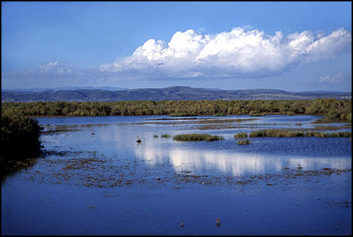
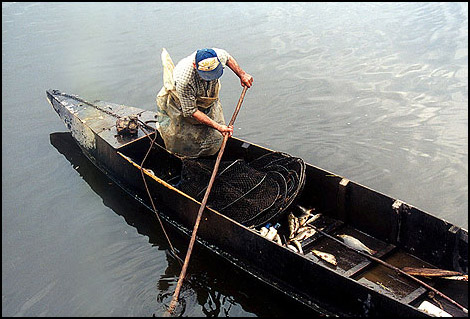
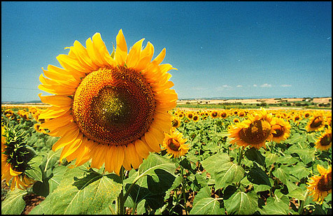
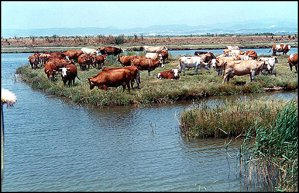
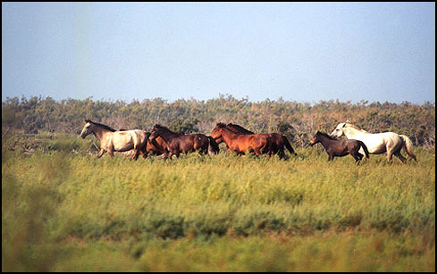

Οι υγρότοποι ανάλογα με τη δομή τους και το γύρω από αυτούς περιβάλλον, επιτελούν ποικίλες λειτουργίες οι οποίες έχουν οικονομική αξία για τον άνθρωπο δίχως ο ίδιος να καταβάλει προσπάθεια όπως είναι η ανακύκλωση των θρεπτικών συστατικών, η προστασία και ο εμπλουτισμός των υπογείων υδάτων. Μερικοί υγρότοποι επιτελούν όλες τις λειτουργίες και φυσικά όλοι οι υγρότοποι δεν τις επιτελούν με την ίδια αποτελεσματικότητα. Οι λειτουργίες συνδέονται στενά μεταξύ τους έτσι ώστε η μεταβολή της μιας μεταβάλλει και τις περισσότερες. Οι λειτουργίες διαφέρουν από υγρότοπο σε υγρότοπο και αλλάζουν με το χρόνο αφού τα υγροτοπικά συστήματα εξελίσσονται συνεχώς.
Ο υγρότοπος αποτελεί τμήμα μόνο του υδρολογικού κύκλου και λειτουργεί ως φορέας εμπλουτισμού αποθήκευσης του υπογείου νερού, δηλαδή τη κίνηση του νερού από τον υγρότοπο προς τα πορώδη υπόγεια πετρώματα τα γνωστά ως υδροφορείς. Το νερό δε χάνεται ποτέ από το παγκόσμιο υδρολογικό σύστημα και συνεχώς ανακυκλώνεται στο περιβάλλον.
Οι υγρότοποι εξαρτώνται άμεσα από την λεκάνη απορροής τους δηλαδή την περιοχή που προμηθεύει με επιφανειακά νερά τον υγρότοπο. Η ζώνη στις εκβολές του ποταμού καθώς και η παράκτια ζώνη πάλι εξαρτώνται από τις διεργασίες του υγροτόπου, από το υδάτινο απόθεμα καθώς και από την ποιότητα του νερού του υγροτόπου. Αν καταστραφεί ο υγρότοπος αυτές οι λειτουργίες θα χαθούν και φυσικά οι επιπτώσεις για τον άνθρωπο θα είναι οδυνηρές.
Οι υγρότοποι παίζουν σπουδαίο ρόλο στον εμπλουτισμό των υπόγειων υδροφορέων. Ο εμπλουτισμός επιτελείται όταν το νερό διηθείται διαμέσου του εδάφους σε υπόγειους υδροφορείς, πετρώματα ή βαθύτερα υπόγεια στρώματα τα οποία συγκρατούν το νερό. Τα επιφανειακά στρώματα εδάφους δρουν σαν φίλτρο καθαρισμού το οποίο κατακρατά τους ρυπαντές αλλά και τα θρεπτικά συστατικά. Οι υπόγειοι υδροφορείς αποτελούν σπουδαία πηγή νερού για οικιακή και βιομηχανική χρήση. Το υπόγειο νερό δεν είναι στατικό αλλά ρέει διαμέσου των υδροφορέων και μπορεί να επιστρέφει στην επιφάνεια σαν πηγή. Το νερό μπορεί επίσης να ρέει υπόγεια και σε άλλες κατευθύνσεις μέχρις ότου να συναντήσει άλλο υγρότοπο και να βγει στην επιφάνεια . Αυτή η λειτουργία είναι πολύ σημαντική γιατί ρυθμίζει τη ροή του ποταμού.
Η ροή των γλυκών νερών διαμέσου των υγροτόπων, δημιουργεί πίεση στα υπόγεια νερά, η οποία εμποδίζει το αλμυρό νερό της θάλασσας να εισβάλλει στα υδροφόρα στρώματα η άνοδος του οποίου θα μπορούσε να αλλοιώσει τα αποθέματα του πόσιμου και αρδεύσιμου γλυκού νερού.
Οι υγρότοποι με την πυκνή τους βλάστηση επιβραδύνουν τις πλημμυρικές ροές και προστατεύουν τις κατοικημένες γεωργικές περιοχές και τις καλλιέργειες τους. Αποθηκεύουν το νερό των πλημμυρών και το αποδίδουν βαθμιαία μετά το πέρας της πλημμύρας με αποτέλεσμα τη μείωση της αιχμής της πλημμύρας. Επίσης η ύπαρξη υγροτόπων στον άνω ρου του ποταμού μειώνει την αιχμή της πλημμύρας με το να διοχετεύονται τα νερά στους παραποτάμους του αφού όλοι οι παραπόταμοι δεν φτάνουν στο κυρίως ποταμό την ίδια χρονική στιγμή.
Ο έλεγχος αυτός των πλημμυρών σε σχέση με τη ``φυσική αποθήκευση`` του νερού είναι υγροτοπικές λειτουργίες ζωτικής σημασίας και συμβάλλουν στο να αποφευχθεί η κατασκευή μεγάλων φραγμάτων. Επίσης η αξία των λειτουργιών αυτών του υγροτόπων αποκτά ιδιαίτερη σημασίας σε περιοχές γύρω από πόλεις όπου μεγάλες εκτάσεις της γης είναι αδιαπέρατες από το νερό.`Ετσι προστατεύονται οι ζωές, η περιουσία και η παραγωγή των ανθρώπων.
Η βλάστηση των υγροτόπων προστατεύει τις ακτές αλλά και τις όχθες από τη διάβρωση απορροφώντας την ενέργεια των κυμάτων ενώ οι ρίζες των φυτών συγκρατούν τα ιζήματα και τα εδάφη.
Πολλές χώρες της Μεσογείου απειλούνται από τη διάβρωση των ακτών και οχθών αφού τα περισσότερα παρόχθια δάση έχουν καταστραφεί, οι καταιγίδες είναι συχνές και δυνατές ενώ σε πολλές και μεγάλες εκτάσεις έχει καταστραφεί η φυσική βλάστηση. Σε όλους σχεδόν τους μεγάλους ποταμούς της Μεσογείου έχουν κατασκευαστεί φράγματα με αποτέλεσμα τη μείωση του γλυκού νερού και των τόσο ωφέλιμων φερτών υλικών και ιζημάτων που καταλήγουν στα δέλτα των ποταμών. Οι παράκτιες χώρες εκπονούν πολυδάπανα προγράμματα για τη σταθεροποίηση των ακτών και παραλιών.
Με τη λειτουργία αυτή τα υλικά που παρασύρει το νερό από τη λεκάνη απορροής του ποταμού, αιχμαλωτίζονται και εναποτίθενται στους υγροτόπους. Η μείωση της ταχύτητας ροής του νερού όταν εισέρχεται στον υγρότοπο, προκαλεί την κατακάθιση των αιωρουμένων υλικών στον πυθμένα συμβάλλοντας έτσι στην σταθεροποίηση των ακτών ενάντια στη διάβρωση των κυμάτων. Η νιτροποίηση, η χημική κατακρήμνιση και άλλες διεργασίες απομακρύνουν ορισμένες ουσίες από το νερό. Η υγροτοπική βλάστηση επιβραδύνει την ταχύτητα ροής αλλά υποβοηθά και στην πρόσληψη ανοργάνων ουσιών οι οποίες μετά το θάνατο των φυτών ενσωματώνονται στον πυθμένα..
Όσο μεγαλύτερο το εμβαδόν και ο όγκος νερού του υγροτόπου τόσο μεγαλύτερη είναι η αποτελεσματικότητά του στο να παγιδεύει ιζήματα. Είναι σημαντικό να διατηρούνται οι παράκτιοι βάλτοι.
Τα ιζήματα γενικά εναποθέτουν 2-4 χιλιοστά το έτος σε περιοχές με κυρίαρχη τη βλάστηση, ενώ σε λασποτόπια γυμνά από βλάστηση τα ιζήματα εναποθέτουν 45 χιλιοστά το έτος.
Μια άλλη λειτουργία των υγροτόπων είναι η ικανότητά τους να κατακρατούν τα συστατικά από το νερό που εισέρχεται στο υγροτοπικό σύστημα. Αυτά τα συστατικά μπορεί να προέρχονται από γεωργικές, δασοπονικές, βιομηχανικές και άλλες δραστηριότητες που συμβαίνουν στα εσωτερικά ή παράκτια νερά και προκαλούν τον ευτροφισμό του νερού σε πολλές περιοχές της Μεσογείου. Καθώς το νερό εισέρχεται και μένει στον υγρότοπο αντιδρά με την οξυγονομένη φυτική μάζα, τα άλατα του αζώτου και του φωσφόρου κατακρατούνται από τα υδρόβια φυτά, παγιδεύονται από τα ιζήματα ή μερικώς ανακυκλώνονται από τα βακτήρια.
Η περιεκτικότητα της ατμόσφαιρας σε διοξείδιο του άνθρακα έχει αρχίσει να αυξάνει επικίνδυνα κατά τον τελευταίο αιώνα. Δραστηριότητες όπως η καύση ορυκτών για τη βιομηχανία, τις μεταφορές και τη θέρμανση καθώς και οι καταστροφές της φυσικής βλάστησης προκάλεσαν την έκλυση μεγάλης ποσότητας διοξειδίου του άνθρακα στην ατμόσφαιρα. Οι υδάτινες μάζες μπορούν να απορροφήσουν, προσωρινά ή μόνιμα, μεγάλη ποσότητα διοξειδίου του άνθρακα από την ατμόσφαιρα. Μέρος της ποσότητας αυτής δεσμεύεται από τους υδρόβιους αυτότροφους οργανισμούς και από τα ιζήματα.
Στους υγροτόπους συναντούμε μικροσκοπικά φύκη, φυτά βυθισμένα εντελώς στο νερό, φυτά με τμήματά τους εξέχοντα απο το νερό, φυτά που μόνο η ρίζα τους βρίσκεται σε συνθήκες κορεσμού με νερό. Άλλα είναι ποώδη και άλλα θαμνώδη. Όλοι αυτοί οι αυτότροφοι οργανισμοί δεσμεύουν ηλιακή ενέργεια και διοξείδιο του άνθρακα. Παράγουν οργανική ουσία. Πολύ υψηλή παραγωγικότητα παρουσιάζουν οι υγρότοποι που έχουν α) αφθονία θρεπτικών στοιχείων, τα οποία συνεχώς ανανεώνονται από τους ποταμούς ή από παλιρροϊκά ρεύματα ή από πλημμύρες και β) έχουν μακρά περίοδο αύξησης των φυτών. Από τους πιο παραγωγικούς υγροτόπους είναι ορισμένα έλη γλυκού νερού με καλαμώνες.
Η πρωτογενής παραγωγικότητα είναι η βάση της δευτερογενούς παραγωγικότητας δηλαδή της παραγωγικότητας σε ετερότροφους οργανισμούς- καταναλωτές. Αυτό επιτελείται με τρεις τρόπους :
α) απευθείας κατανάλωση φυτών και φυκών από φυτοφάγα και σαπροφάγα ζώα, β) κατανάλωση βιοθρυμμάτων δηλαδή τεμάχια νεκρής φυτικής ύλης, και γ) παροχή σε καταναλωτές οργανισμούς, πέραν της τροφής και ενδιαιτημάτων για αναπαραγωγή, φώλιασμα, ξεκούραση και προστασία από αντίξοες συνθήκες.
Ένα υγροτοπικό οικοσύστημα δεν είναι αυτοτελές. Πάντα έχει κάποια τροφική διασύνδεση με άλλα υγροτοπικά οικοσυστήματα, δασικά, λιβαδικά, αγροτικά και άλλα οικοσυστήματα της λεκάνης απορροής του υγροτόπου ή ακόμη και των γειτονικών λεκανών. Τα μεταναστευτικά πουλιά συνδέουν τα τροφικά πλέγματα υγροτόπων οι οποίοι απέχουν μεταξύ τους χιλιάδες χιλιόμετρα.
Το νερό έχει μοναδικές θερμικές ιδιότητες και είναι αυτές που καθιστούν τους υγροτόπους ως ένα βαθμό, ρυθμιστές της θερμοκρασίας των παράκτιων περιοχών.
Επειδή το νερό έχει μεγάλη ειδική θερμότητα, χρειάζονται μεγάλα ποσά θερμότητας για να αυξηθεί ή να ελαττωθεί η θερμοκρασία του. Επίσης ιδιαίτερα μεγάλη είναι και η θερμική αγωγιμότητα του νερού. Αυτό σημαίνει ότι η θερμική ενέργεια που δέχεται ένα τμήμα μιας υδατοσυλλογής μεταφέρεται πολύ γρήγορα σε όλη την υδάτινη μάζα.
Οι μοναδικές αυτές ιδιότητες του νερού, καθιστούν τις υδατοσυλλογές αποθήκες θερμότητας,.ιδιαίτερα κατά το θέρος και ελευθερώνουν τη θερμότητα κατά τον χειμώνα. Συνέπεια αυτής της λειτουργίας είναι ότι οι διαφορές στη θερμοκρασία του αέρα χειμώνα - θέρους και ημέρας - νύχτας είναι πολύ μικρότερες σε περιοχές όπου κυριαρχεί το υγρό στοιχείο σε σύγκριση με περιοχές που βρίσκονται μακριά από υγροτόπους.
Οι υγρότοποι αν και προσφέρουν στις τοπικές κοινωνίες πολλά και χρήσιμα στοιχεία, εν τούτοις εξακολουθούν να απειλούνται από τις αποξηράνσεις και την κακή διαχείριση.
Οι υγρότοποι επιτελούν ποικίλες φυσικές λειτουργίες από τις οποίες οι τοπικές αλλά και περιφερειακές κοινωνίες οφελούνται κατά το μέγιστο, δίχως οι ίδιες να καταβάλλουν προσπάθεια ή και κόστος για την απόκτηση των αγαθών. Πολλοί υγρότοποι είναι ιδεώδεις τόποι για πολλά είδη ψαρών, είναι πολύτιμοι για την κτηνοτροφία και προσφέρουν ιδανικές συνθήκες για την ανάπτυξη ειδών της άγριας φύσης με αποτέλεσμα να θεωρούνται πηγή οικονομικών πόρων, ψυχαγωγίας και αναψυχής.
Η σχετικά πρόσφατη άποψη ότι οι υγρότοποι είναι σκουπιδότοποι προέκυψε από το γεγονός ότι, στην προσπάθεια επέκτασης της γεωργικής δραστηριότητας σε τέτοιες περιοχές, η αποξήρανση, η αποψίλωση και η περίφραξη τους ως ιδιωτική γεωργική γη ήταν μια επίπονη και χρονοβόρα προσπάθεια, οι δε υγρότοποι αποδείχθηκαν ότι "δεν είναι συνεργάσιμοι" και δεν επιδέχονται εύκολα μετατροπές. Ετσι αφέθηκαν εκτός των δραστηριοτήτων αυτών σαν άχρηστοι σκουπιδότοποι.
Οι περισσότεροι υγρότοποι παραμένουν ως κοινόχρηστες εκτάσεις όπου ασκείται εκτεταμμένα το κυνήγι, το ψάρεμα, η βόσκηση, η συγκομιδή φυτών δίχως περιορισμό ή έλεγχο. Παρ`όλα αυτά οι παραδοσιακές ασχολίες στηριζόμενες στις κοινόχρηστες εύφορες εκτάσεις των υγροτόπων, υπήρχαν κατά το παρελθόν και θα εξακολουθούν να υπάρχουν σαν πηγές με μεγάλο οικονομικό όφελος. Οι σύγχρονες αναπτυξιακές δράσεις σε γενικές γραμμές είναι συμβατές με την προστασία των φυσικών πόρων των υγροτόπων σε σχέση με τη διατήρηση της βιοποικιλότητάς τους και την πλούσια και εύφορη μελλοντική παρουσία τους. Οι περισσότερες παραδοσιακές οικονομικές δραστηριότητες στους υγροτόπους αποτελούν τεχνικές αειφορικής χρήσης των φυσικών πόρων.
Ένα δίκτυο άθικτων περιοχών σ`ένα υγρότοπο, από τις παράκτιες λιμνοθάλασσες και τις εκβολές του ποταμού μέχρι τα ενδότερα τμήματα του ποταμού, αποτελούν ζωτικούς χώρους ανάπτυξης της ιχθυοπαραγωγής με οικονομικό όφελος. Τα ιχθυοτροφεία κυριαρχούσαν σε υγροτοπικές περιοχές πριν την ανάπτυξη του τουρισμού. Σήμερα τα ιχθυοτροφεία των λιμνοθαλασσών παράγουν μόνο το 3% της συνολικής παραγωγής των αλιευμάτων της Μεσογείου αν και έχουν τη δυνατότητα υψηλής παραγωγής, σχεδόν δεκαπλάσια από αυτή της ανοικτής θάλασσας, τα δε αλιεύματα συγκεντρώνουν την υψηλότερη τιμή.
Η λειτουργία των λιμνοθαλασσών θα πρέπει να είναι διαρκώς ελεγχόμενη με κατάλληλη διάταξη και κατασκευή των αναχωμάτων τα οποία περικλείουν τα γλυκά νερά και τη θάλασσα και το διαρκή έλεγχο ώστε η αλατότητα παραμένει στα επιτρεπτά όρια. Τα περισσότερα ψάρια είναι μεταναστευτικά. Μπαίνουν στις λιμνοθάλασσες κάθε άνοιξη, τρέφονται εκεί και αναπτύσσονται πριν τις αφήσουν για την ανοικτή θάλασσα το φθινόπωρο. Στις εξόδους της λιμνοθάλασσας υπάρχουν ``πόρτες-παγίδες ``, τα σοδευτικά στόμια, οι οποίες επιτρέπουν τα νεαρά ψάρια να φύγουν στη θάλασσα και τα μεγάλα ψαρεύονται για την αγορά. Κατά το παρελθόν οι πόρτες αυτές κατασκευαζόταν με παραδοσιακό τρόπο, από ξύλο και καλάμι το έπερναν από τη γύρω περιοχή. Σήμερα οι πόρτες κατασκευάζονται από μπετόν και μέταλλο.
Οι Μεσογειακοί υγρότοποι έχουν εξελιχθεί με την παρουσία όχι μόνο των αγρίων ζώων αλλά και των αγροτικών.
Η βόσκηση στους υγροτόπους είναι μια παραγωγική δραστηριότητα η οποία εφαρμοζόταν από τα πολύ παλιά χρόνια. Οι κτηνοτρόφοι συνήθιζαν να εγκαθιστούν τα μαντριά και τους στάβλους τους κοντά σε υγροτόπους.
Όπως όλες οι παραδοσιακές δραστηριότητες, έτσι και η βόσκηση έχει ευεργετικά αποτελέσματα στους υγροτόπους. Συντελεί στη διατήρηση και ανανέωση της μεγάλης ποικιλίας της βλάστησης καλύτερα από κάθε άλλη μέθοδο όπως το κόψιμο ή το κάψιμο της βλάστησης σε μεγάλες εκτάσεις. Η τυχόν εξαφάνιση των ζώων από τα λιβάδια θα μεταβάλλει τη σύνθεση των φυτικών ειδών με συνέπειες άγνωστες στο όλο οικοσύστημα
Οι πατημασιές των ζώων, ιδιαίτερα των μεγάλων όπως είναι οι αγελάδες ή τα βουβάλια, δημιουργούν γυμνά τμήματα γης τα οποία είναι κατάλληλα για κάποια άλλα είδη που είναι σκαπανείς. Πολλοί σπόροι βλαστάνουν στις πατημασιές των ζώων. Τα ζώα συνήθως έρχονται στα υγρά λιβάδια των υγροτόπων το καλοκαίρι όταν υπάρχει ακόμα χλωρή τροφή σε αντίθεση με τα χερσαία λιβάδια τα οποία δεν έχουν επαρκή εδαφική υγρασία την περίοδο αυτή.
Οι αλυκές, οι οριζώνες, οι οστρακοκαλλιέργειες κ.ά είναι μερικές από τις ανθρώπινες δραστηριότητες που εκμεταλλεύονται τους ανανεώσιμους φυσικούς πόρους των υγροτόπων εφ`όσον όμως σχεδιαστούν ορθά και σύμφωνα με τις αρχές της αειφορικής διαχείρισης. Αυτές οι δραστηριότητες συνεισφέρουν στη διαφύλαξη αυτών των πολύτιμων οικοσυστημάτων.
Οι υγρότοποι με τη μεγάλη και πλούσια ποικίλια φυτικών και ζωικών ειδών, γενετικού υλικού και οικολογική ποικιλότητα (βιολογική ποικιλότητα) προσφέρουν ευκαιρίες αναψυχής και απόλαυσης του τοπίου, της παρατήρησης των πουλιών, της φωτογράφισης των φυτών και των πουλιών, του ψαρέματος, του κυνηγιού, της ιππασίας αλλά και της πεζοπορίας κ.ά.
Οι υγρότοποι με τα πολλαπλά οφέλη τους αντιπροσωπεύουν ένα πολύ μεγάλο κεφάλαιο για τον άνθρωπο καθώς και ένα πολύ μεγάλο και ενδιαφέρον πεδίο έρευνας για τους επιστήμονες, αφού μόνο ένα μικρό τμήμα τους έχει μελετηθεί.
Πολλά σπάνια ή κινδυνεύοντα είδη ζουν στους υγροτόπους ή εξαρτώνται από αυτούς για την επιβίωσή τους. `Αλλα πάλι είδη χρειάζονται συγκεκριμένους τύπους υγροτόπων ενώ άλλα είδη πρέπει να περάσουν ένα διάστημα της ζωής τους κοντά στο νερό για ιδιαίτερο σκοπό όπως ξεκούραση, φώλιασμα ή εύρεση τροφής.
Έχει μελετηθεί ότι από τα 50 είδη αμφιβίων της Μεσογείου, τα 27 από αυτά είναι ενδημικά. Για τα θηλαστικά, τα οποία δεν είναι και πάρα πολλά στη Μεσόγειο, οι υγρότοποι προσφέρουν καταφύγιο κατά το καλοκαίρι. Οκτώ από τα 29 παγκοσμίως απειλούμενα είδη πουλιών παρατηρούνται στη Μεσόγειο και είναι υγροτοπικά είδη. Περισσότερα από τα υδρόβια πουλιά μετακινούνται από υγρότοπο σε υγρότοπο κατά τις μεταναστεύσεις. Η Μεσόγειος βρίσκεται πάνω στους κύριους άξονες μετανάστευσης των πουλιών και δυό φορές το χρόνο εκατομμύρια πουλιών διασχίζουν τη Μεσόγειο - προς το βορρά την άνοιξη όταν ψάχνουν υγροτόπους για να αναπτυχθούν και να αναπαραχθούν και προς το νότο το φθινόπωρο για ξεχειμωνιάσουν σε πιο ήπιες περιοχές.